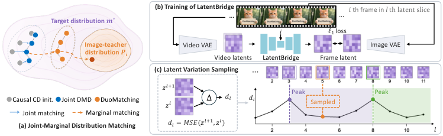

Think of an animator with two coaches. The film director checks that scenes flow together but will not approve a single gorgeous frame that clashes with its neighbors. A portrait painter looks at one still at a time and says "add the feather, sharpen the fur." Listening to both gives frames that are crisp and still move together.
코치가 둘인 애니메이터를 떠올려 보자. 영화감독은 장면이 매끄럽게 이어지는지 보지만, 앞뒤와 어긋나는 프레임은 아무리 예뻐도 통과시키지 않는다. 초상화가는 정지 화면을 한 장씩 보며 "깃털을 넣고 털을 더 선명하게"라고 말한다. 둘 다 들으면 프레임은 또렷하면서도 함께 자연스럽게 움직인다.
How it works: a second teacher for single frames작동 방식은 프레임 한 장을 위한 두 번째 교사
The image teacher pulls each sampled frame toward a sharper target, while the video teacher still holds the whole clip together. Both terms are DMD losses, weighted 1 : 0.4.
이미지 교사는 뽑힌 프레임을 더 선명한 목표 쪽으로 당기고, 비디오 교사는 여전히 영상 전체를 붙잡는다. 두 항 모두 DMD 손실이며 가중치는 1 : 0.4다.

- Pretrain LatentBridge once.LatentBridge를 한 번 미리 학습한다.An L1-trained mapper on 29,400 OpenVid clips avoids decoding and re-encoding, which ran out of memory.OpenVid 영상 29,400개로 L1 학습한 변환기라서, 메모리가 부족했던 디코딩 후 재인코딩을 피한다.
- Pick 4 frames by change.변화량으로 4프레임을 고른다.Split the clip at the 3 largest latent jumps and sample one slice per segment.잠재 변화가 가장 큰 3곳에서 영상을 나누고, 구간마다 한 조각씩 뽑는다.
- Train with both teachers.두 교사로 함께 학습한다.Joint DMD from Wan2.1 plus marginal DMD from Qwen-Image, for 1,000 steps from Causal Forcing++.Wan2.1의 결합 DMD와 Qwen-Image의 주변 DMD로, Causal Forcing++에서 출발해 1,000단계 학습한다.
Key detail: map latents, don't copy them핵심 디테일은 잠재를 그대로 쓰지 말고 옮기는 것
Feeding compressed video latents straight to the image teacher freezes the motion; LatentBridge keeps it. One video latent covers several frames, so it must be unpacked first.
압축된 비디오 잠재를 그대로 이미지 교사에 넣으면 움직임이 굳어 버리고, LatentBridge를 거치면 살아 있다. 비디오 잠재 하나가 여러 프레임을 담고 있어서 먼저 풀어야 하기 때문이다.
Results: sharper frames at the same step count같은 단계 수로 더 선명한 프레임
DuoMatching tops each matched step budget on the VBench total. The gains come from semantics and aesthetics; Dynamic Degree slips a little in chunk mode.
DuoMatching는 단계 수를 맞춘 각 비교에서 VBench 총점 1위다. 향상은 의미 점수와 미적 점수에서 나오고, 청크 모드에서는 Dynamic Degree가 조금 떨어진다.
| Method | Mode · NFE | Semantic | Dynamic | Total |
|---|---|---|---|---|
| One-Forcing | Frame · 1 | 69.25 | 66.11 | 82.09 |
| DuoMatching | Frame · 1 | 69.95 | 69.44 | 82.65 |
| Causal Forcing++ | Frame · 2 | 68.42 | 94.44 | 80.67 |
| DuoMatching | Frame · 2 | 72.84 | 93.61 | 83.53 |
| Causal Forcing++ | Chunk · 4 | 70.84 | 80.56 | 82.79 |
| DuoMatching | Chunk · 4 | 71.61 | 76.67 | 83.51 |
People prefer it clearly on looks and prompt fit, but only at parity on motion against Causal Forcing++ and CausVid. That matches what the metrics show.
사람들은 화질과 프롬프트 반영에서 확실히 이쪽을 고르지만, Causal Forcing++와 CausVid 대비 움직임은 비슷한 수준이다. 지표가 보여 준 결과와 같다.
When distilling a sequence model, a joint teacher can quietly veto per-step improvements; adding a per-step teacher, even from another modality, can recover them. The bridge between latent spaces is what makes this work.시퀀스 모델을 증류할 때 결합 분포 교사는 단계별 개선을 조용히 막을 수 있다. 다른 모달리티라도 단계별 교사를 더하면 그 개선을 되살릴 수 있고, 이를 가능하게 하는 것은 잠재 공간 사이의 다리다.
Evidence is VBench plus a 23-person study on one 1.3B Wan2.1 student, and the motion score drops in chunk mode. Training needs a large image teacher in the loop, and long-horizon drift beyond 81 frames is not tested.근거는 1.3B Wan2.1 학생 하나에 대한 VBench와 23명 사람 평가뿐이고, 청크 모드에서는 움직임 점수가 떨어진다. 학습 중에 큰 이미지 교사를 계속 돌려야 하며, 81프레임보다 긴 생성에서의 드리프트는 시험하지 않았다.